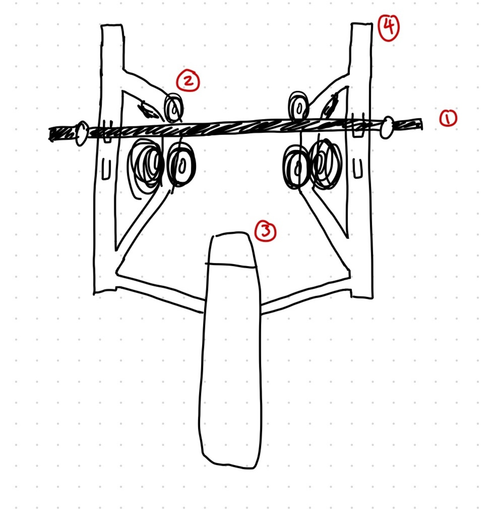
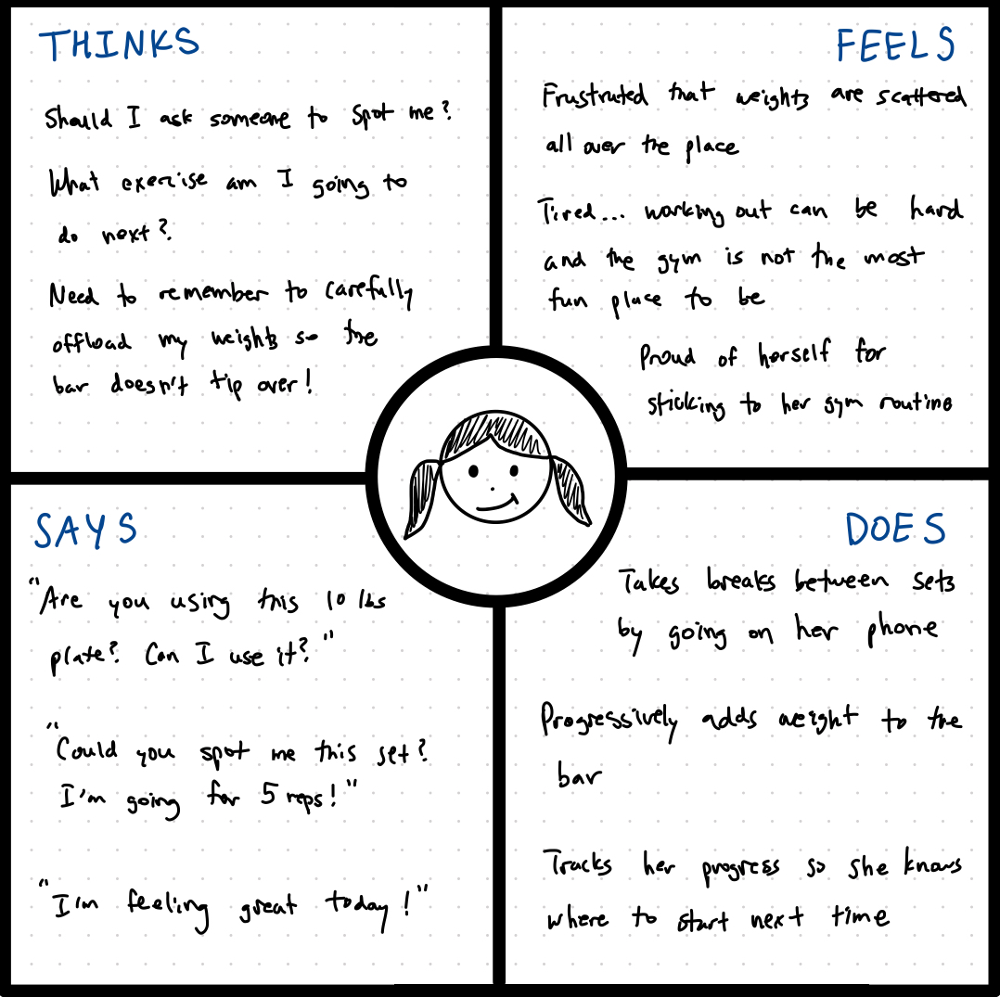
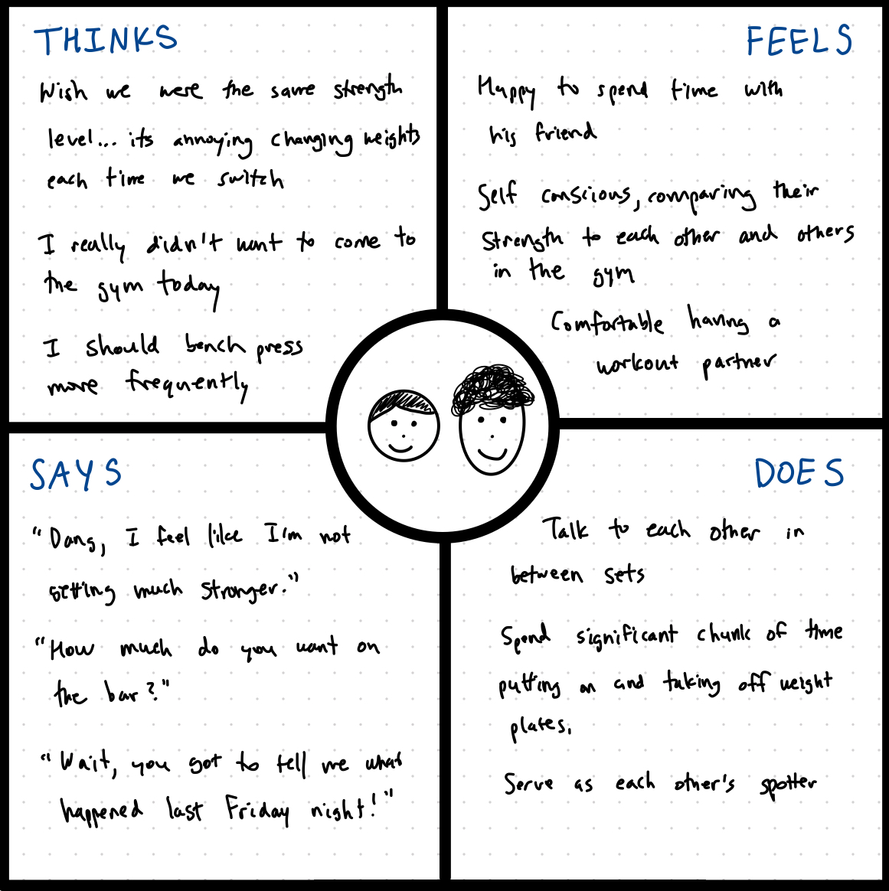

Bench Press
Introduction
The interface I chose was the bench press, a piece of exercise equipment used to train one's upper body,
targeting the chest, tricep, and shoulder muscles.
Key Components

- Bar: The interface's main character, user engages in resistance training by pressing this up and down
- Plate Holders: Stores plates of varying weights and sizes
- Bench: Platform where user situates themselves, padded for comfort and sweat resistant
- Rack: The structure of the interface, bolted to the ground to offer stability, hooks hold the bar in resting position
Questions About Interface
- What do you find intuitive about using bench press?
- What do you find unintuitive about using the bench press?
- Do you use the bench press alone or with other people?
- Does your user experience change based on what time/day you use the bench press?
- Do social norms influence how you interact with the bench press?
Takeaways
Key Observations
Users begin interacting with the interface by adding little to no weight to the bar. As they
perform more repetitions, they increased the amount of weight. Once finished with using the
bench press, users transferred weight from the bar back to the plate holders, manually
resetting the interface for the next user.
Summary of Questions
- What do you find intuitive about using the bench press?
Users agreed that the simplicity and popularity of the bench press made it easy to use.
Unlike some other exercise interfaces in the gym, the bench press has relatively few moving parts.
- What do you find unintuitive about using the bench press?
There were complaints about how weight plates were not where they were expected.
While plate holders are labelled (i.e. 2.5, 5, 10, 25, 35, 45) to represent what type of weight should be stored there,
gym goers do not always put things back where they are supposed to go.
- Do you use the bench press alone or with other people?
Some perform the exercise together with a workout buddy, while others tend to use the interface individually.
However, all parties acknowledged the benefit of having a "spotter", an indiviudal who can help the bench presser
safely complete their exercise.
- Does your user experience change based on what time/day you use the bench press?
Users stated that the weight plates can become increasingly disorganized throughout the day. Unlike many other interfaces,
the bench press is one that must be manually "reset" by its latest user.
- Do social norms influence how you interact with the bench press?
A social norm for using the bench press is that one should use the fewest number of weight plates to achieve
their desired weight load. For example, to achieve 45lbs on each side, gym goers feel as though they must use
be loaded in decreasing order. For example, a 45lbs weight must come before a 10lbs weight.
Personas
Persona A: Protein Peyton
- Protein Peyton is a frequent gym goer who sticks closely to her exercise routine.
- She faces two main interface issues. The first is that gym weights are unorganized, forcing
her to scour the gym for unused weights. As someone who lifts a lot of weight, she also acknowledges
the fact that she must be careful when removing weights off the bar. A large imbalance in weight can
cause the bar to tip over, which is a health hazard.
- Peyton represents solo bench presser who knows what they are doing. They are most concerned about
getting a good workout done and have a definitive plan on how to do so.

Persona B: Fred and Felix, Fitness Friends
- Fred and Felix are fitness friends who enjoy working out together. The gym is an opportunity to catch up with each
other while holding each other accountable for staying in good shape.
- Our fitness friends face interface issues stemming from their differences in strength levels. Taking off and putting on weights
while staying true to the social norms (using minimal plates and organizing them in descending order) makes the experience less enjoyable.
- Fred and Felix represent a more casual bench press user that treats the gym itself as a social experience.

Storyboard
Fitness Friends Using the Bench Press